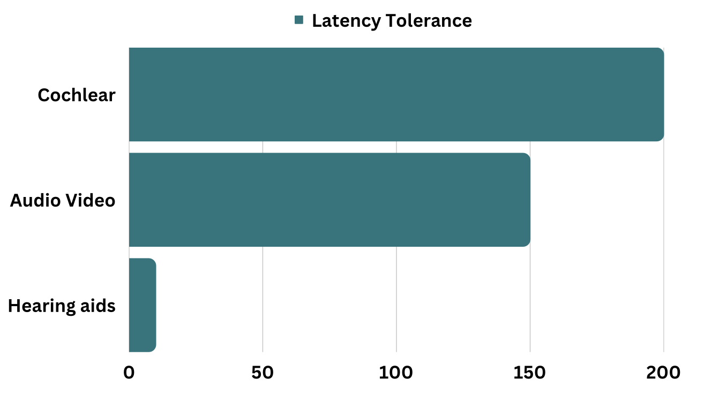
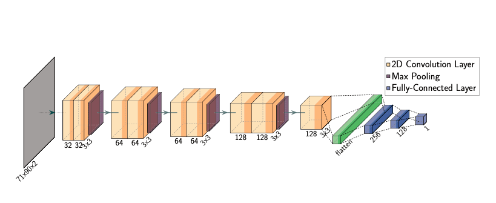
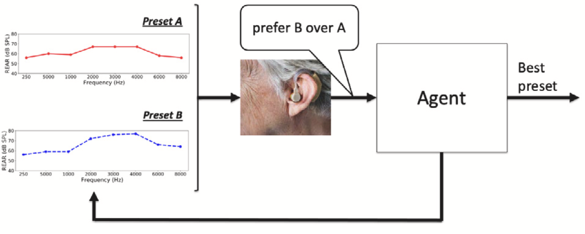

Selected Work
Deep learning and embedded systems work, mostly at the intersection with healthcare — from hearing aids to clinical audio monitoring.

Designed, trained, and optimized deep learning models in PyTorch and TensorFlow for low-latency noise suppression on embedded devices, targeting real-time deployment on hearing aids.
Read the paper →
A cough detector for clinic waiting rooms built with TensorFlow, identifying cough sounds and estimating the share of patients reporting cough as a symptom — used as a surveillance tool for respiratory disease outbreaks.
Read the paper →
Developed an optimization technique for hearing aid configurations based on patient feedback and multi-armed bandit algorithms.
Read the paper →